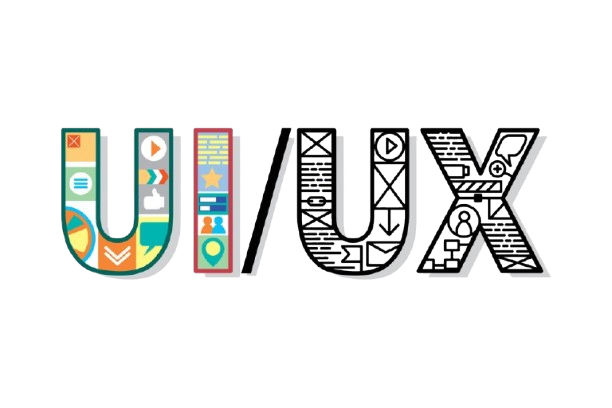
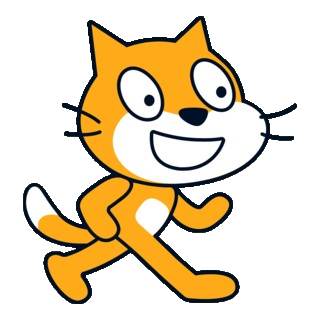
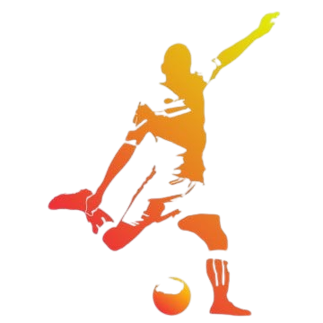

Hello, I'm Hirozhi
I am a 14-year-old student currently studying at Pondok Tahfidz Plus Abudzar. I am
passionate about web development and proud to call myself a web developer. While
I dedicate time to memorizing the Qur'an and learning Islamic knowledge, I also enjoy
creating and building websites as part of my personal interest and future goals.

My Skill

UI Dan UX
I am a UI/UX designer with strong expertise in crafting intuitive and user-centered digital experiences. With a solid background in design principles, user research, and creative problem-solving, I create interfaces that are not only visually appealing but also highly functional. I am passionate about blending creativity and usability to deliver products that truly meet user needs and elevate the overall experience.

Scratch
I’m skilled in Scratch, a visual programming platform for creating animations, games, and interactive stories. Using drag-and-drop code blocks, I build creative projects that integrate programming logic. This skill helps me solve challenges efficiently while creating engaging user experiences. I also collaborate with the Scratch community to share my work and improve through feedback.

Futsal
I am skilled in futsal, with strong technical abilities in ball control, passing, and shooting. My experience on the court has helped me develop quick decision-making skills, teamwork, and strategic play. I thrive in fast-paced environments, always focused on maintaining possession and creating scoring opportunities. My commitment to practice and game awareness allows me to contribute effectively to the team's success.